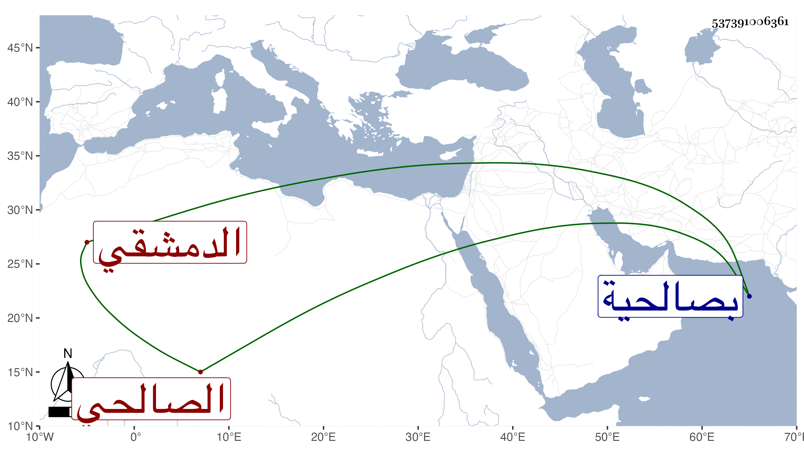

0902Sakhawi.DawLamic.ITO20230111-ara1.EIS1600.537391006361
Biography ID: 537391006361
إبراهيم بن أبي بكر بن أحمد بن علي الصالحي الدمشقي ويعرف بابن البيطار أخو بركة الآتية في النساء لقيته بصالحية دمشق وهو متوعك كثير البكاء والتأوه لما يقاسي من الألم فظن بعض من لا تمييز له في هذا إختلاطه فلم أقرأ عليه لذلك شيئا ولكن استجزته في استدعاء الولد فأجاز ومات بعد ذلك بنحو شهر في ثاني عشر رجب سنة تسع وخمسين في نحو الثمانين ودفن من الغد بسفح قاسيون وقد قرأ عليه بعض من هناك من طلبة الحديث جزءا من المختارة للضياء بحضوره له في الأولي على .
